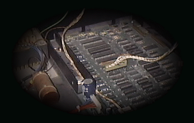
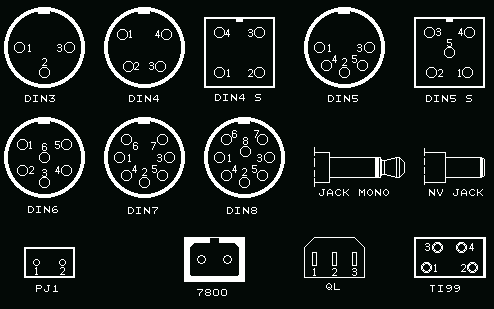
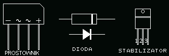
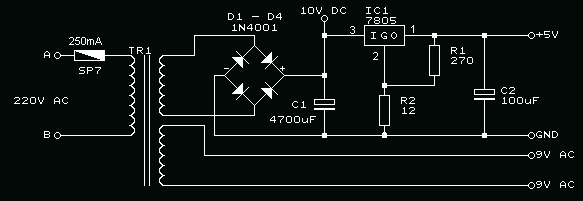
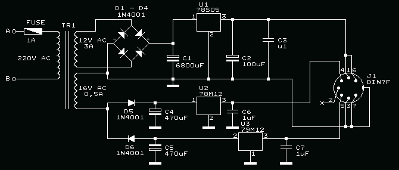
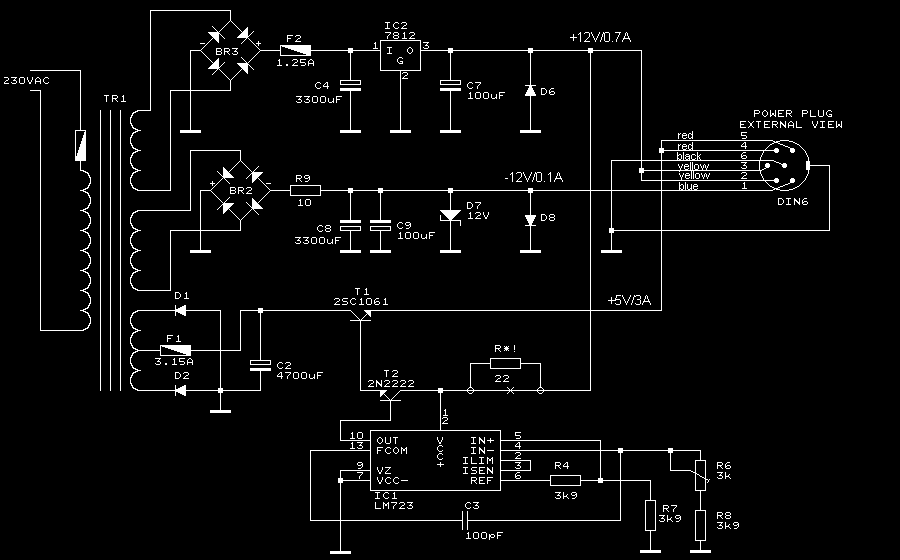
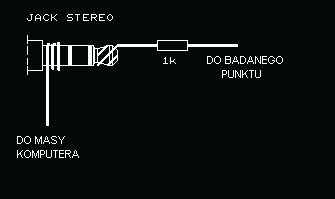
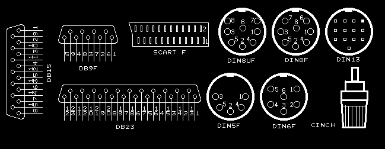
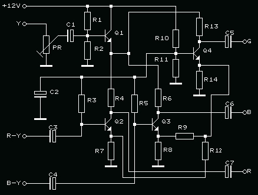

Co zrobić, gdy trafił nam się komputer tzw. goły, bez zasilacza, instrukcji, a w dodatku jest to niezwykle rzadki egzemplarz, o którym wiadomo tylko, że istnieje? Po pierwsze - zachować spokój. Niejaki von Neuman określił kiedyś, z czego musi się składać komputer, żeby działał. Także i w tym przypadku tak być musi, a przynajmniej powinno.1. OBRÓBKA WSTĘPNAKażdy egzemplarz bezpośrednio po przyniesieniu z giełdy wstawiam od razu do wanny. Ma to na celu zabezpieczenie się przed nielegalnymi mieszkańcami znajdującymi się wewnątrz, np. karaluchami czy mrówkami faraona. Następnie rozkręcam obudowę, mając na podorędziu jakiś środek owadobójczy lub chociażby prysznic i sprawdzam wnętrze. Gdy wszystko jest w porządku - kontynuuję demontaż tak, by została sama obudowa. Tzw. bebechy odkładam na bok. Obudowę myję ciepłą wodą z mydłem, posługując się gąbką. Zakamarki czyszczę starą szczoteczką do zębów. Dokładnie płuczę, nadmiar wody strząsam i zewnętrzne powierzchnie przecieram ręcznikiem papierowym, by uniknąć plam zostawianych przez wysychające krople na gładkich powierzchniach. Obudowę odstawiam do wyschnięcia w przewiewnym miejscu. Płytę główną czyszczę suchym pędzlem z kurzu. Jeżeli widać, że jest zalana lepką cieczą - można ją umyć tak jak obudowę. Nie zapominajmy, że głównymi użytkownikami domowych komputerów są dzieci uwielbiające Coca Colę. Przy myciu chronię modulator przed dostaniem się wody do środka (najlepiej go wymontować przed myciem). Płytę suszę tak, jak obudowę, tyle, że przynajmniej dwa dni, aby wyparowała woda spod układów scalonych i z podstawek. Wszelkie mechanizmy: napędy dyskowe, mechanizmy drukujące i magnetofonowe czyszczę z kurzu pędzlem lub sprężonym powietrzem. Klawiatury czyszczę pędzlem, a spomiędzy klawiszy kurz usuwam sprężonym powietrzem. 2. PRZEGLĄD ELEMENTÓWPo wysuszeniu elementów należy je dokładnie obejrzeć, aby wykryć ewentualne uszkodzenia i określić sposób ich usunięcia. Do klejenia elementów plastykowych używam cykloheksanonu (elementy niewidoczne). Pęknięcia powierzchni zewnętrznych są najtrudniejsze do naprawy, bo klejenie pozostawia ślady. O ile to możliwe - przyklejam pod spodem nakładkę. Gdy grubość pękniętej ścianki jest większa niż 3mm, a nie ma miejsca na nakładkę - zgrzewam peknięcie od strony wewnętrznej za pomocą lutownicy i dla wzmocnienia wtapiam kilka klamerek od zszywacza równo z powierzchnią. Operacja jest delikatna i trzeba uważać, żeby nie przetopić plastyku na wylot. 3. USTALENIE NAPIĘCIA ZASILANIAGdy nie mamy oryginalnego zasilacza - trzeba obejrzeć obwody zasilania, aby w przybliżeniu określić napięcia zasilające i ich biegunowość. Jeżeli na płycie znajdują się prostowniki - oznacza to, że zasilacz dostarcza napięcia (lub kilku napięć) zmiennych (np. TI99/4a, urządzenia peryferyjne Atari). Wartość tych napięć można określić na podstawie napięć oznaczonych na obudowach kondensatorów elektrolitycznych na wyjściu prostowników. Należy przyjąć zasadę, że wartość skuteczna napięcia zmiennego może mieć najwyżej połowę napięcia nominalnego kondensatora. Sprawa się upraszcza, gdy na płycie za prostownikami umieszczone są stabilizatory scalone - wówczas napięcie skuteczne powinno być o 4 do 5V wyższe od napięcia stabilizatora. Większe trudności nastręcza ustalenie napięcia zasilania, gdy na płycie nie ma prostownika. Oznacza to, że zasilacz dostarcza napięcia stałego. Gdy jest stabilizator - napięcie stałe powinno być POD OBCIĄŻENIEM wyższe od napięcia stabilizatora rownież o wartość od 4 do 5V. Gdy na płycie nie ma stabilizatorów - oznacza to, że zasilacz dostarcza jednego lub więcej napięć stabilizowanych (Atari XL/XE, C64). Zawsze powinno występować napięcie +5V. Innymi typowymi wartościami są +12V, -5V i -12V. Wszystkich tych napięć dostarcza zasilacz do PC, który można stosować jako zasilacz uniwersalny, wybierając potrzebne napięcia. Najtrudniej określić napięcie zasilające, gdy w komputerze znajduje się zasilacz impulsowy (APPLE //c). Tu trzeba postępować ostrożnie, bo przekroczenie napięcia może spowodować uskodzenie przetwornicy. Częstym błędem jest podłączenie napięcia sieci 220V do zasilacza ustawionego na 110V lub przeznaczonego do zasilania takim napięciem. Ma to miejsce z reguły w sprzęcie pochodzącym z USA lub Kanady. Sam miałem przyjemność taki błąd popełnić. Bardzo ważna jest biegunowość napięcia zasilającego. Jej przypadkowa zamiana może doprowadzić do zniszczenia układów scalonych. Łatwo ją ustalić śledząc przebieg ścieżek zasilania i biegunowość kondensatorów elektrolitycznych. Część komputerów posiada diodę zabezpieczającą przed przypadkową zamianą biegunowości.  Rys. 1 Różne rodzaje złącz zasilaczy.  Rys. 2 Niektóre elementy zasilaczy. Budowa prostego zasilacza nie jest zadaniem trudnym nawet dla początkujących. Poniżej podaję schemat prostego zasilacza do komputera COMMODORE 64. Schemat zasilacza fabrycznego do tego komputera praktycznie niczym się nie różni.  Rys. 3 Schemat prostego zasilacza (tu - do COMMODORE 64). Zasilacz ten może zasilać zarówno komputery Commodore (VC20, 64, 128, +4, c16/116), jak i Atari XL/XE, ZX Spectrum i wiele innych. Z powodzeniem robiłem próby zasilania Atari 800XL i magnetofonu Atari 1010. Jeżeli w zasilaczu zastosuje się transformator o mocy ok. 50W, to bez problemu ruszy też stacja Atari 1050. Zasilanie 1010 i 1050 mozliwe jest z oddzielnych uzwojeń 9V AC. Transformator powinien mieć dwa uzwojenia wtórne (izolowane od siebie) o napięciu ok 10 - 11V AC i obciązalności ok. 2A na uzwojenie. Stabilizator 7805, lub lepiej 7805S należy umieścić na radiatorze aluminiowym o powierzchni 2dm 2. Oto wskazówki dotyczące rodzaju wtyczek i podłączenia w nich napięć w zależności od typu sprzętu: ATARI 600/800XL i seria XE: wtyk DIN7. +5V podłączyć do zwartych ze sobą pinów 1, 4 i 6, a GND do zwartych pinów 3, 5, i 7. Pin 2 pozostawić wolny. ATARI 400, 800 i 1200XL, peryferia Atari (oprócz 1027): wtyk NV JACK 5,5 X 2,5 mm (średnica zewn.=5,5mm, wewn.=2,4mm). Do wtyku podłączyć 9V AC. Dla ATARI 1027 należy zastosować wtyk NV JACK 6,0 X 3,0mm. Drukarka ta pobiera duży prąd (do 3A). ATARI 7800: wtyk 7800. 10V DC do pinu 2, GND do pinu 1. ATARI 5200 oraz INDUS GT - stacja dysków do ATARI i COMMODORE: wtyk NV JACK 5,5 X 2,5. +5V do styku środkowego, GND do zewnętrznego. ATARI 2600, ATARI VIDEO PINBALL: wtyk JACK MONO. 10V DC do końcówki wewnętrznej(czubek), GND na zewnątrz. ATARI PONG: wtyk JACK MONO. 6V DC stabilizowane (stabilizator 7806) do końcówki wewnętrznej(czubek), GND na zewnątrz. ATARI 130ST, 260ST i 520ST: wtyk DIN7F. Schemat zasilacza do tych komputerów przedstawiony jest na poniższym rysunku:  Rys. 4 Schemat zewnętrznego zasilacza do komputerów 130ST, 260ST i 520ST (bez wbudowanej stacji dysków). COMMODORE VC20, C64: wtyk DIN7. +5V do pinu 5, GND do 2, do pinów 6 i 7 podłączyć 9V AC. COMMODORE VIC20: wtyk PJ1. Do końcówek podlączyć 9V AC 1,5A. COMMODORE +4: jak w C64 lub, w przypadku wtyku DIN4 S: +5V do pinu 1, GND do 2, do pinów 3 i 4 podłączyć 9V AC. COMMODORE 128: wtyk DIN5 S. +5V do pinu 1, GND do 2, do pinów 3 i 5 podłączyć 9V AC. COMMODORE AMIGA: wtyk DIN5 S. +5V/2A do pinu 1, GND do 2 i 4, pin 3 to +12V/0.5A, pin 5 -12V/0.05A. COMMODORE 16, 116, ZX Spectrum i TIMEX: wtyk NV JACK 5,5 X 2,1mm. 10V DC do styku zewnętrznego, GND do środkowego. COMMODORE 1541 II: wtyk DIN4. +5V do pinu 1, GND do pinu 2, +12V do pinu 4. Pin 3 - wolny. Wymaga wyższych napięć, niż daje przedstawiony na rys.3 zasilacz. SINCLAIR QL: wtyk QL. +10V do styku 3, GND do 2. 15V AC do styków 1 i 2. Wymaga wyższych napięć , niż daje przedstawiony zasilacz. TI99/4A oraz stacje dysków do ATARI: LDW2000 i CA2001: złącze TI99. Pin 1 i 2 17V AC/0.7A, pin 3 i 4 10V AC/1A. APPLE //c : wtyk DIN7 żeński. W dokumentacji APPLE przedstawiona jest inna numeracja styków: w złączu w komputerze pin 1 jest tam, gdzie w DIN7 jest pin 7 i rośnie kolejno zgodnie z ruchem wskazówek zegara. Ja będę się trzymał numeracji złącz dostępnych na naszym rynku (patrz rysunek 1). W złączu zasilacza APPLE //c przyporządkowanie pinów jest następujące: piny 3, 5 i 2 są zwarte i połączone z GND, na zwartych pinach 1 i 4 jest 15V DC/1A. Piny 7 i 6 są wolne. Należy pamiętać, że położenie otworów w złączu zasilacza jest lustrzanym odbiciem złącza z rys.1. SPECTRAVIDEO SVI738: złącze NV JACK 5,5 X 2,2 mm. Do końcówek podłączyć 17V AC/2A. SINCLAIR ZX SPECTRUM I ZX SPECTRUM+: złącze NV JACK 5,5 X 2,2 mm. Napięcie 10V DC/1,5A. +10V podłączyć do końcówki zewnętrznej, - do wewnętrznej. SINCLAIR 128k SPECTRUM +3: złącze DIN6. Napięcia stabilizowane: +5V/3A DC - pin 4 i 5, +12V/0.7A DC - pin 2 i 3, -12V DC - pin1, GND - pin 6 i metalowa osłona wtyku. Schemat zasilacza przedstawiony jest na poniższym rysunku:  Rys. 5 Schemat fabrycznego zasilacza Spectrum +3. W obwód kolektora tranzystora T2 proponuję wstawić rezystor zabezpieczający (oznaczony R*!) o wartości 22Ω. AMSTRAD/SCHNEIDER CPC 664 i CPC 6128: złącza NV JACK 5 X 2,2 mm. Komputery te mają gniazdo i wtyczkę zasilającą o tych samych wymiarach. Do prawidłowego zasilenia tych modeli zasilacz powinien dać 5V DC 1,5A i 12V DC 0,7A. Zasilacz powinien mieć wtyk, na który należy podać napięcie +5V do końcówki wewnętrznej, masę (-) do zewnętrznej, oraz gniazdo, na którego bolcu powinna być masa (-), a na styku zewnętrznym +12V. Obie masy są wspólne. AMSTRAD/SCHNEIDER CPC 464: złącze NV JACK 5 X 2 mm. Do końcówki środkowej podłączyć +5V (1,5A), zewnętrznej masę (-). Dalsze typy dodawane będą w miarę rozwoju strony. 4. WYJŚCIE VIDEOGdy już szczęśliwie przebrnę przez określenie napięcia zasilania i zmontuję prowizoryczny zasilacz - przychodzi czas na zastanowienie się nad podłączeniem monitora lub telewizora. W tym drugim przypadku sprawa jest prosta. Gorzej, gdy konstruktor nie przewidział wyjścia TV, a tylko monitorowe. Trzeba wtedy nie tylko zlokalizować gniazdo monitorowe, ale i określić przeznaczenie poszczególnych pinów. Postaram się opisać wykonanie tego w możliwie prosty sposób. Ale najpierw trochę szczegółów, bo w nich tkwi diabeł. COMPOSITE VIDEO (CV) - to zespolony sygnał wizyjny, zawierający treść obrazu wraz z impulsami synchronizacji poziomej i pionowej oraz zakodowane informacje o kolorze. Kodowanie koloru odbywa się w różny sposób. Istnieją trzy główne systemy kodowania: NTSC, PAL I SECAM. Jeżeli monitor nie będzie dostosowany do systemu komputera - odtworzy obraz czarno-biały. RGB - (od Red, Green, Blue) wieloprzewodowy sposób sterowania monitora. Każda ze składowych koloru R, G i B jest przesyłana osobnym przewodem. Impulsy synchronizacji mogą być osobne (H i V), zsumowane w sygnał Composite Synchro (CSync) lub zsumowane i zespolone z sygnałem G. RGB pozwala na uzyskanie najlepszej jakości obrazu kolorowego. RGBI - RGB z dodatkowym sygnałem Intensity niosącym informację o jasności aktualnie wyświetlanego punktu. W PC jest to standard CGA. Wyjście takie ma np. Commodore 128. COMPOSITE LUMINANCE (CL) - jak CV, ale bez informacji o kolorze. MONOCHROME (MC) - osobny sygnał Luminancji. Osobne sygnały synchronizacji mogą być rozdzielone (H i V) lub jako CSync. Z powyższego widać, jaka różnorodność sygnałów może wystąpić na wyjściu monitorowym. Dodam jeszcze, że każdy z sygnałów H i V może występować w formie odwróconej. Można się załamać? Można. Ale nie jest tak źle. W komputerach ośmiobitowych najczęściej występuje CV i RGB+CSync. Często obydwa występują w jednym złączu (Amstrad CPC, ZX Spectrum +2 i +3). Skomplikowane sygnały występują w komputerach zwykle posiadających już wbudowany monitor. Jak rozpoznać sygnały? Ideałem jest posiadanie oscyloskopu, chociażby w postaci karty do PC za parę groszy. Co zrobić, gdy nie mamy takiego urządzenia? Można użyć... słuchawek od walkmana. Nie jest to przyrząd pomiarowy, ale do prób wystarczy. Sygnał wizyjny słyszany jest w słuchawkach w postaci warkotu (jaki słychać przy niedostrojonym telewizorze).  Rys. 4 Sposób sporządzenia próbnika ze słuchawek od walkmana. Gdy określę, na których pinach słychać warkot - próbuję podłączyć tam wejście monitora. Jeżeli warkot słychać na więcej niż trzech pinach, a na żadnym nie udaje się uzyskać obrazu - prawdopodobnie mam do czynienia z wyjściem do monitora RGB. Można jeszcze spróbować podłączyć do tych pinów oporniki ok. 100 om, których wolne końce po zwarciu razem mogą dać sygnał CL. W takim przypadku mogą występować kłopoty z synchronizacją, ale już powinna być widoczna treść obrazu. Można wtedy spróbować dobrać wartości oporników, aby uzyskać najlepszy kontrast i synchronizację. Najlepiej jednak poszukać informacji w Internecie, bo może wyważam otwarte drzwi? Dlatego poniżej podaję opis znanych mi wyjść monitorowych:  Rys. 5 Typowe złącza monitorowe. Omówione tu złącza pokazane sa w widoku z zewnątrz. Nie umieściłem tu złącz typu BNC i CINCH, ponieważ określenie ich przeznaczenia nie przedstawia większych trudności. Z reguły bowiem są one opisane przez producenta. Najczęściej stosowanym złączem monitora jest DIN5F: pin 1 - CL pin 2 - GND pin 3 - Audio Out pin 4 - CV pin 5 - Sygnał koloru lub wolny Takie złącze jest w komputerach Atari (oprócz modelu 400 oraz pracujących w systemie SECAM). W komputerach Commodore stosowane jest złącze DIN8UF: pin 1 - CL pin 2 - GND pin 3 - Audio Out pin 4 - CV pin 5 - Audio In pin 6 - Sygnał koloru pin 7 - wolny pin 8 - wolny W Commodore 128 i 128D znajduje się złącze DB9F, na które wyprowadzone są sygnały RGBI: pin 1 - GND pin 2 - GND pin 3 - R pin 4 - G pin 5 - B pin 6 - Intensity pin 7 - Monochrome pin 8 - H pin 9 - V W Commodore VIC=20/VC=20 zastosowano złącze DIN5F: pin 1 - +6V DC/50mA pin 2 - GND pin 3 - Audio Out pin 4 - CV L pin 5 - CV H Wyjaśnienia wymagają sygnały CV L i CV H. Otóż komputery te nie mają wewnętrznego modulatora TV, a do złącza tego można dołączyć zewętrzny modulator zasilany napięciem +6V DC. Sygnał CV H służy do wysterowania modulatora, CV L do monitora. Obydwa sygnały pochodzą z jednego źródła: CV H - bezpośrednio, CV L - przez tłumik oporowy. CV L = 0,6 CV H. W Commodore Amiga zastosowano złącze DB23F: pin 1 - XCLK (wejście zegara zewnętrznego) pin 2 - XCLKEN (zezwolenie zegara zewn. 47Ohm) pin 3 - R pin 4 - G pin 5 - B pin 6 - DI (Digital Intensity) pin 7 - DR (Digital Red) pin 8 - DG (Digital Green) pin 9 - DB (Digital Blue) pin 10 - CSync pin 11 - H pin 12 - V pin 13 - GND XCLKEN (nie łączyć z masą ogólną pin 16 - 20) pin 14 - PIXELSW (Genlock Overlay 47 Ohm) pin 15 - CK OUT (wyjście zegara 47 Ohm) pin 16 - GND pin 17 - GND pin 18 - GND pin 19 - GND pin 20 - GND pin 21 - -12V DC/10mA (A500, A600, A1200) -5VDC/10A (A1000, 2000, 3000, 4000) pin 22 - +12V DC 0.1A max pin 23 - +5V DC 0.1A max W komputerach Apple 2GS stosowane jest złącze DB15F: pin 1 - GND RED pin 2 - RED pin 3 - Cosync pin 4 - Nieużywany pin 5 - GREEN pin 6 - GND GREEN pin 7 - Nieużywany pin 8 - Nieużywany pin 9 - BLUE pin 10 - Nieużywany pin 11 - Nieużywany pin 12 - Nieużywany pin 13 - GND BLUE pin 14 - Nieużywany pin 15 - Nieużywany Osłona metalowa GND W komputerach Sinclair stosowane jest złącze DIN8F: pin 1 - CV pin 2 - GND pin 3 - CL pin 4 - CSync pin 5 - V pin 6 - G pin 7 - R pin 8 - B W komputerze SAM umieszczono typowe złącze SCART (EUROCONNECTOR). Oto rozkład jego wyprowadzeń: pin 1 - prawy kanał Audio Out pin 2 - lewy kanał Audio In pin 3 - lewy kanał Audio Out pin 4 - GND pin 5 - GND pin 6 - prawy kanał Audio In pin 7 - B pin 8 - SN pin 9 - GND pin 10 - wolny pin 11 - G pin 12 - wolny pin 13 - GND pin 14 - GND pin 15 - R pin 16 - FB pin 17 - GND pin 18 - GND pin 19 - CV out pin 20 - CV in Wyjaśnienia wymaga znaczenie sygnałów SN i FB. SN to sygnał przełączający odbiornik TV w tryb monitora, FB to sygnał wygaszania. W komputerach Sharp MZ-XXX też jest złącze DIN8F, ale inaczej podłączone: pin 1 - CV pin 2 - GND pin 3 - CSync pin 4 - H pin 5 - V pin 6 - R pin 7 - G pin 8 - B Z kolei Amstrad/Schneider w komputerach CPC stosuje złącze DIN6F podłączone nastepująco: pin 1 - R pin 2 - G pin 3 - B pin 4 - CSync pin 5 - GND pin 6 - Luminancja (wykorzystuje ją monitor monochromatyczny) W komputerze EPSON QX-10 jest złącze DIN8F, a w monitorze DIN7F. Monitor QX-10 jest zasilany z komputera i połączony z nim za pomocą kabla - przejściówki: KOMPUTER: pin 1 - +12V pin 2 - GND pin 3 - wolny pin 4 - H (szpilki dodatnie) pin 5 - V (szpilki dodatnie) pin 6 - GND pin 7 - GND pin 8 - Luminancja MONITOR: pin 1 - Luminancja pin 2 - V pin 3 - H pin 4 - +12V pin 5 - GND pin 6 - GND pin 7 - wolny W komputerze MSX Philips VG-8020 zastosowano złącze DIN8F: pin 1 - +5V pin 2 - GND pin 3 - Audio Out pin 4 - CL pin 5 - CV pin 6 - +12V pin 7 - wolny pin 8 - wolny W komputerach Atari ST użyto złącza DIN13F: pin 1 - Audio Out pin 2 - CSync (w modelach M z modulatorem - CV) pin 3 - GPO pin 4 - Monochrome Sense (zwarty do masy przez monitor mono SM124) pin 5 - Audio In pin 6 - G pin 7 - R pin 8 - Mode Sw (podciągnięty do +12V przez R=12k w komputerze) pin 9 - H pin 10 - B pin 11 - Monochrome Out (Hires) pin 12 - V pin 13 - GND Rosyjski komputer LVOV PK-01 posiada złącze typu DIN7F: Podziękowania dla Tomasza Dulka ( tdulek@poczta.wp.pl ) pin 1 - wolny pin 2 - CSync pin 3 - B pin 4 - G pin 5 - R pin 6 - GND pin 7 - wolny Komputer TI 99/4A ma wyjście z nietypowymi sygnałami. Złącze jest typu DIN6F: pin 1 - +12V pin 2 - Y pin 3 - R-Y pin 4 - B-Y pin 5 - Audio Out pin 6 - GND Y jest sygnałem luminancji (można go wykorzystać jako CL), R-Y i B-Y to sygnały różnicowe chrominancji. W sygnale Y zawarte są również impulsy synchronizacji. Z tych trzech sygnałów w dość prosty sposob uzyskać można sygnały R, G i B. Sygnał Y wykorzystać można wtedy również jako CSync. Poniżej przedstawiam prosty dekoder nadający się do TI99/4A jak również do ZX Spectrum. Szczególnie w tym ostatnim wypadku warto wykonać taki układ, a wtedy będzie można ocenić zalety obrazu RGB w stosunku do CV, zniknie bowiem nieprzyjemna mora na ekranie.  Rys. 4 Dekoder RGB do TI99/4A i ZX Spectrum. Wartości elementów: Tranzystory: 2N3904 lub BC107 Kondensatory: C2 100uF/16V, pozostale 10uF/16V Oporniki: R1=3k9; R2=8k2; R3 i R5=10k; R4, R6 i R13=560Ω; R7, R8, R9 i R14=180Ω; R10=4k7; R11=1k2; R12=680Ω. Potencjometr montażowy PR=1k służy do wstępnego ustawienia kontrastu. Regulacja: wartość R1 dobrać tak by na emiterze Q1 osiągnąć napięcie około 9V. Wartość R10 dobrać tak, aby na emiterach pozostałych tranzystorów było napięcie około 1V. W przypadku ZX Spectrum konieczne jest odwrócenie fazy Y. Można je osiągnąć przez wymianę tranzystora Q1 na PNP (BC177) i wstawienie oprnika 180Ω między emiter a +12V. Kolektor podłączyć w miejsce emitera na rysunku, baza pozostaje bez zmian. Sygnały R-Y, B-Y i Y dostępne są na złączu krawędziowym. 4. TESTOWANIETeraz nadchodzi długo oczekiwany moment - sprawdzenie działania. Jeżeli na ekranie pokaże się obraz, to już dobrze. Najlepiej jest, gdy zgłosi się Basic, wtedy można sprawdzić działanie klawiatury naciskając kolejno klawisze. Gdy klawiatura działa właściwie, można wpisać prosty program obliczający jakąś wartość w pętli i uruchomić go na czas ok 1-2godz. Wyjdą wtedy na jaw wszelkie usterki związane z przegrzewaniem się układów scalonych. Najlepszym wyjściem jest podłączenie kartridża testowego, ale dostęp do niego jest z reguły niemożliwy. W dziale SCHEMATY można znaleźć schematy takich kartridży do Atari XL/XE i Commodore 64. 5. NAPRAWIAMY SPRZĘTW przypadku wadliwego działania komputera pozostaje próba jego reanimacji. Zajrzyj tutaj. Na przykładzie komputerów Atari XL/XE opisane są sposoby diagnozy i usuwania typowych uszkodzeń. W przypadku nietypowych uszkodzeń pozostaje wymiana kolejnych układów (o ile są one jeszcze do zdobycia na rynku). Aktualizowano poprzednio 26 I 2001, a kolejno 05 VII 2024 :o) |